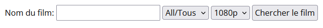

TPS is a python movie researcher. A kind of torrent
search engine.
It is extremly simple go on the search page
- Type the name of your movie in the blank
form

- Click on search
- And here you go !! A list with all the results
with their name, magnet link, size and even number of seeders !
Features
- Choose the language of the movie (currently
only French and English are available).
- Choose the quality of the movie.
- Automatically download your movie by simply
clicking the little ➕ button next to its number of seeders.
- Export the output to a csv.
How does it works ?
Web
GUI:
Scraping:
- A PirateBay and Torrent9 scrapper made by
myself 👍 (
searcher.py)